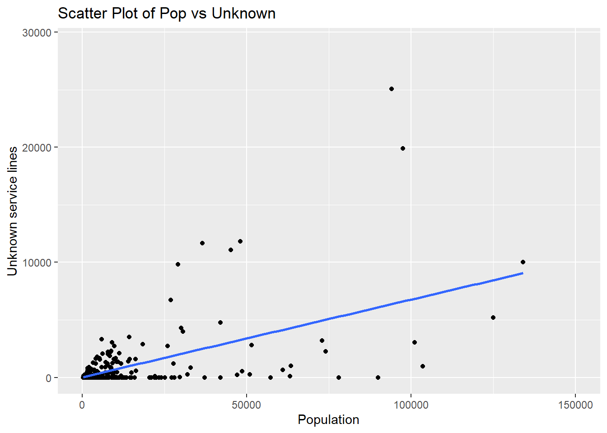

library(tidyverse)
library(ggformula)
library(mosaic)
library(tidyr)
library(kableExtra)
library(knitr)
library(glmmTMB)
library(plotly)
library(forcats)
library(rworldmap)Pop_to_unknown
Setting
loading in the data
data <- read.csv("~/Mcgregor Project/Data material/CSV-extracts from sql/Population_to_unknown_lines.csv")Pearson Test
poptable <- data$population
servtable <- data$Total_service
unktable <- data$Total_unknown
UNKSERVtable <- data$Total_unknown / data$Total_service
result <- cor.test(poptable,unktable)
print(result)
Pearson's product-moment correlation
data: x and y
t = 14.27, df = 285, p-value < 2.2e-16
alternative hypothesis: true correlation is not equal to 0
95 percent confidence interval:
0.5725582 0.7083803
sample estimates:
cor
0.6455451 data: The test was performed on variables “x” and “y”.
t-value: The t-value is 14.27, which represents the strength and direction of the correlation. A higher absolute t-value indicates a stronger correlation. In this case, the positive t-value suggests a positive correlation between the variables.
df: The degrees of freedom (df) is 285, indicating the amount of information available for the test.
p-value: The p-value is less than 2.2e-16, which indicates a highly significant result. The small p-value provides strong evidence against the null hypothesis and suggests that the correlation is statistically significant.
alternative hypothesis: The alternative hypothesis states that the true correlation is not equal to 0, implying that there is a significant correlation between variables “x” and “y”.
confidence interval: The 95 percent confidence interval is reported as 0.5725582 to 0.7083803. It provides a range of values within which we can be 95% confident that the true correlation lies.
sample estimate: The sample estimate (cor) is 0.6455451, which represents the estimated correlation coefficient. It indicates a moderate positive correlation between “x” and “y”.
In summary, the results indicate a highly significant and moderate positive correlation (0.6455) between variables “x” and “y”. The t-value and p-value suggest that this correlation is statistically significant at a 95% confidence level. The confidence interval (0.5726 to 0.7084) provides a range within which we can be 95% confident that the true correlation lies.
# Load the required packages
library(knitr)
library(kableExtra)
# Create a table from the result
result_table <- data.frame(
Test = "Pearson's correlation",
t_value = result$statistic,
df = result$parameter,
p_value = format(result$p.value, scientific = TRUE),
alternative_hypothesis = result$alternative,
confidence_interval = paste0("[", result$conf.int[1], ", ", result$conf.int[2], "]"),
sample_estimates = result$estimate
)
# Format the table
formatted_table <- kable(result_table[, -1], align = "c", format = "html", escape = FALSE) %>%
kable_styling(full_width = FALSE) %>%
add_header_above(c(" " = 1, "Correlation Test Result" = 6)) # Adjust the header row to have 6 columns
# Print the formatted table
formatted_table| t_value | df | p_value | alternative_hypothesis | confidence_interval | sample_estimates | |
|---|---|---|---|---|---|---|
| t | 14.26966 | 285 | 3.152889e-35 | two.sided | [0.572558170654408, 0.708380345577091] | 0.6455451 |
ggplot(data, aes(x = poptable, y = unktable)) +
geom_point() +
geom_smooth(method = "lm", se = FALSE) +
labs(x = "Population", y = "Unknown service lines") +
ggtitle("Scatter Plot of Pop vs Unknown")+
xlim(0, 150000)`geom_smooth()` using formula = 'y ~ x'
fig <- plot_ly(data = data, x = ~poptable, y = ~unktable, type = "scatter", mode = 'markers', marker = list(opacity = 0.9))
fig <- fig %>% layout(title = 'Population to lead city ratio in Michigan',
xaxis = list(showgrid = FALSE),
yaxis = list(showgrid = FALSE),
showlegend = FALSE)
figSecond Pearson Test
result1 <- cor.test(UNKSERVtable,poptable)
print(result1)
Pearson's product-moment correlation
data: x and y
t = 0.1507, df = 285, p-value = 0.8803
alternative hypothesis: true correlation is not equal to 0
95 percent confidence interval:
-0.1069653 0.1245783
sample estimates:
cor
0.008926176 The results you provided are related to Pearson’s product-moment correlation coefficient, which is a measure of the strength and direction of the linear relationship between two variables, denoted as x and y. Let’s break down the results:
t-value: The t-value measures the strength of the evidence against the null hypothesis, which states that there is no correlation between x and y. In your case, the t-value is 0.1507.
Degrees of freedom (df): Degrees of freedom represent the number of independent observations available for estimating the population parameters. In this case, you have 285 degrees of freedom.
p-value: The p-value indicates the probability of obtaining a correlation coefficient as extreme as the one observed (or even more extreme) if the null hypothesis were true (i.e., if there were no correlation). In your case, the p-value is 0.8803, which is relatively high. This suggests that there is weak evidence against the null hypothesis, and the observed correlation could be due to chance.
Alternative hypothesis: The alternative hypothesis states what we are trying to determine, which is whether the true correlation between x and y is not equal to zero. It implies that there is some relationship between the variables.
95 percent confidence interval: The confidence interval provides a range of values within which we are reasonably confident that the true correlation lies. In your case, the confidence interval is -0.1069653 to 0.1245783. Since this interval contains zero, it further supports the notion that the observed correlation is not significantly different from zero.
Sample estimates: The sample estimate is the observed correlation coefficient between x and y. In your case, the estimated correlation coefficient is 0.008926176, indicating a very weak and practically negligible correlation between the variables.
In summary, based on the provided results, there is no strong evidence to support a significant correlation between x and y. The observed correlation is close to zero, and it could be due to random chance rather than a true relationship between the variables.
ggplot(data, aes(x = poptable, y = UNKSERVtable)) +
geom_point() +
geom_smooth(method = "lm", se = FALSE) +
labs(x = "Population", y = "Unknown service lines") +
ggtitle("Scatter Plot of Pop vs Unknown")+
xlim(0, 150000)`geom_smooth()` using formula = 'y ~ x'
fig1 <- plot_ly(data = data, x = ~poptable, y = ~UNKSERVtable, type = "scatter", mode = 'markers', marker = list(opacity = 0.9))
fig1 <- fig1|>layout(title = 'unknown/service to population city ratio in Michigan',
xaxis = list(showgrid = FALSE),
yaxis = list(showgrid = FALSE), showlegend = FALSE)
fig1